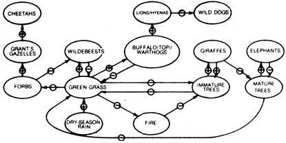

Ecoscience
May/June 1985
Paul Ehrlich (Bing Professor of Population Studies and Professor of Biological Sciences, Stanford University) and Anne Ehrlich (Senior Research Associate, Department of Biological Sciences, Stanford) are familiar names to ecologists and environmentalists everywhere. But while most folks are aware of the Ehrlichs' popular writing in the areas of ecology and overpopulation (most of us - for instance - have read Paul's book The Population Bomb ), few people have any idea of how deeply the Ehrlichs are involved in ecological research (the type that tends to be published only in technical journals and college texts). That's why we're pleased to present this regular semitechnical column by these well-known authors/ecologists/educators.
The Serengeti: A Natural Ecosystem Part III
by Anne and Paul Ehrlich
In our last two columns, we examined some of the intricacies of the complex Serengeti ecosystem. But what can be said of the stability of the system? If it's disturbed, does it return to its previous state? Two large-scale disruptions of the system have been observed historically. The first was a great epidemic of rinderpest, a ruminant-attacking viral disease that's native to the steppes of Asia. The origin of the epidemic may have been viruses introduced with cattle brought to Africa by the British from Russia in 1884, during their unsuccessful attempt to relieve General "Chinese" Gordon at the battle of Khartoum. Or it may have been introduced around 1889 with zebu cattle brought from India to Abyssinia to feed Italian troops.
Whatever its origin, the disease first attacked the cattle of the Masai and other herding tribes. This led to disastrous famines between the 1890's and 1920, in which at least two-thirds of the Masai perished. By 1890 the disease had moved into native ruminants, and the buffalo, wildebeests, and giraffes were disappearing.
The decimation of the herbivores caused the predators to starve, and some lions switched to eating people. The man-eating lions of Tsavo became famous in 1898, and in 1920 there was an outbreak in Uganda in which a single lion was reported to have devoured 84 people.
The appearance of the man-eaters led to the abandonment of land by cultivators, and this, combined with the disappearance of the herders and the native grazing and browsing animals, opened the door to a reinvasion of plains areas by woodland flora. Then, by 1910 or so, the wild ruminants began to become resistant to the disease, and the resultant increased population of grazers nourished tsetse flies, which expanded their range into the new brushy areas. The sleeping sickness carried by the tsetse fly further reduced the region's human population..
In the 1930's, brush-control programs gradually brought the tsetse flies under control, and vaccination began to reduce the impact of rinderpest on the cattle population. The native ruminants' resistance to the rinderpest virus slowly became stronger until the disease killed only yearlings that had not yet acquired immunity and then, finally, it disappeared altogether in the early 1960's.
The results were dramatic. The survival of wildebeest yearlings increased from 25% to 50% and the total population of these ruminants shot up from a quarter million in 1961 to a half million in 1967. Furthermore, buffalo increased from 30,000 to 50,000 during the same period. Interestingly, the nonruminant zebras, immune to rinderpest, showed no such population changes.
On our visit to the Serengeti with THE Mother Earth News Tours in 1984, we were told that rinderpest had reappeared among the buffalo, causing heavy mortality in the Ngorongoro Crater population. The significance of this is not readily apparent, however, since research on the Serengetiecosystem has unfortunately declined as Tanzania's economic condition has worsened.
More Grass for Grazers
The second major observed disturbance of the Serengeti system was the increase in dry-season precipitation in 1971 to 1976, as mentioned in the first part of this series. This raised the productivity of grasslands at the time when it's usually at a low point. That, in turn, caused a further increase in wildebeest and buffalo; the wildebeest population reached about 1.3 million by 1977.
For reasons that are not clear, there was no parallel effect upon the numbers of other grazers such as zebras. (There was some sign that the competition for food resources by wildebeests somewhat slowed the increase of buffalo, even though there was no evidence of a reverse effect.) There may be competition between wildebeests and zebras, which could have led to a small decline in the latter, but census data are not adequate to document it.
The increase in wildebeests may have had a positive effect on the population size of Grant's gazelles by altering their relationship to plants. Growth of forbs (herbaceous plants other than grass) is favored when intense grazing keeps the grasses short and thus less able to shade out the forbs . . . and gazelles prefer to eat forbs. The proliferation of gazelles may have been responsible for an increase in cheetahs, which feed heavily upon them.
The explosion in the wildebeest population might have been expected to benefit their predators - lions and hyenas - but such was not the case. The post-rinderpest wildebeest population rise was not paralleled by an increase in the numbers of lions and hyenas, apparently because the territorial populations of these two predators are controlled by the scarcity of food during the period when the migratory wildebeests are absent. However, the predators did respond to the increase in nonmigratory ungulates (topi, kongoni, and warthogs) caused by greater rainfall. In the early 1970's, lions nearly doubled in number, and the hyena population increased by almost 50%. As a result, the wild dog population declined because of fiercer competition from other predators that preempted wild dog kills and because of direct predation on their pups by hyenas.
Other elements of the system also changed. Increased rainfall reduced the frequency of dry-season fires; that, in turn, helped the survival of small acacia trees leading to increased numbers of giraffes. These animals tend to keep the small trees from "escaping" into the mature class - growing too tall for the giraffes to eat them. But the mature trees are killed by elephants, which push them over. Thus, the altered rainfall pattern affected a complex, dynamic fire-tree-giraffe-elephant system that may cycle over considerable periods because of the long generation times of the organisms involved.
One Thing Leads to Another
Some major linkages in the complex Serengeti system are shown in the accompanying diagram. The feeding sequences indicated, such as forbs - Grant's gazelles - cheetahs . . . or grass - buffalo - lions, are technically known as food chains . Although the diagram doesn't show it, these chains are actually woven into more complex food webs . For example, lions eat Grant's gazelles, wildebeests, buffalo, and giraffes (even though this has no major effect on their numbers), and Grant's gazelles eat some grass along with their forbs.
The entire ecosystem, of course, is driven by the energy of the sun. The sun's heat evaporates the oceanic waters that eventually rain on the Serengeti. More important, the sun's energy is captured by green plants in the process of photosynthesis , converting the radiant form of energy in sunlight into chemical energy in the bonds of sugar molecules and in those of other carbohydrates. That chemicalbond energy is then used by the plants and by successive trophic (feeding) levels up the food chains - from herbivores to predators to decomposers.
But, as described by the second law of thermodynamics, the amount of energy available to each trophic level declines with each successive upward step. According to the second law, whenever energy - which can be described as the stored capacity for work - is used to do such work, some of it becomes unavailable for further work. We'll deal in detail with this important law in a future column, but its significance here is that, in any ecosystem, more energy is available to support plants than herbivores, more to support herbivores than carnivores, and so on.
Because of the steady loss of availability of energy as it moves through food chains, energy must make a one-way trip through ecosystems: It cannot be recycled. In contrast, nutrients can be recycled; they tend to move in circular paths through ecosystems.
The nutrients in plants are acquired by herbivores when they eat plants and by carnivores when they eat herbivores. The nutrients are then incorporated into the complex chemical molecules of the plants and animals.
At the end of all food chains, the decomposers do a final breakdown, returning the nutrient elements from the biological to the physical part of the ecosystem - usually to the soil, from which plants can take them up again.
From One to All
The basic structure of the Serengeti system - food chains and webs through which useful energy passes on a oneway trip and through which nutrients cycle - is characteristic of all ecosystems.
To return to the question asked at the beginning of this column, the paleontological record indicates that the major features of the Serengeti - including its semiarid climate - have been relatively stable for at least a million years, and possibly for much longer. Changes come and go, but the system appears always to return to roughly the same state. The long-term stability of the climate is critically important to this balance, however. It's clear, for instance, that if the rainfall were to increase to a point at which the major migrants became sedentary, the entire structure of the system could change dramatically.
In future columns, we'll examine changes in ecosystems in some detail, but in MOTHER NO. 94, we'll present a practical application of the knowledge that's resulted from the study of natural semiarid ecosystems in East Africa.
Details on the structure of the Serengeti ecosystem can be found in Serengeti: Dynamics of an Ecosystem (University of Chicago, 1979), by A.R.E. Sinclair and M. Norton-Griffiths. The basic information in the diagram is taken from this book. A more general treatment of ecosystems is given in Ehrlich, Ehrlich, and Holdren, Ecoscience: Population, Resources, Environment (Freeman & Co., San Francisco, 1977).
The Ehrlichs' work is supported in part by a grant from the Koret Foundation of San Francisco.
 NOTE: MINUS SIGNS INDICATE THAT AN INCREASE IN THE ELEMENT IN THE PRECEDING OVAL LEADS TO A DECREASE IN THE ELEMENT IN THE FOLLOWING OVAL PLUS SIGNS SHOW WHERE AN INCREASE LEADS TO AN INCREASE. |
 |
|